FIELD JOURNAL / 2015 專題紀錄
把田裡的收成，變成餐桌上的作品。
披薩、戚風蛋糕與吐司：保留當年的材料與作法，跟著小組的料理照片一起閱讀。
地瓜口感好、營養價值高，能變化出許多美味料理，像是台灣人最常吃的地瓜稀飯、市集裡常見的炸薯條、炸薯片、地瓜球……
為了親身體驗地瓜料理的過程，我們特別邀請專業的家政老師，利用課餘時間教我們用金山地瓜做創意料理。這天全員到齊，一起在烹飪教室動手做。以下是我們的活動過程，以及這些創意料理的作法，有興趣的人不妨跟著一起做做看。
地瓜披薩

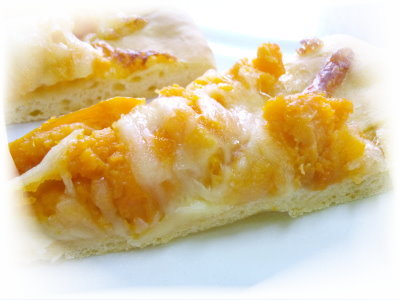
材料準備
- 溫水 280 g、乾酵母 1 T、糖 1 T（放入碗中混合）
- 高筋麵粉 300 g
- 低筋麵粉 200 g
- 鹽 1 T
- 奶油 25 g
- 地瓜 100 g
步驟一：高筋與低筋麵粉加鹽一起過篩，築成粉牆，再把混合好的酵母水慢慢倒進粉牆中間。

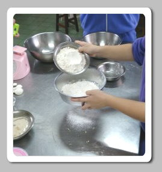


步驟二：加入地瓜，揉成麵糰。

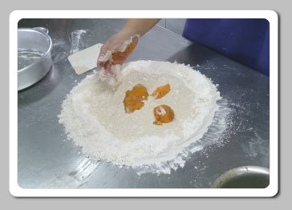
步驟三：快揉成糰時加入奶油。

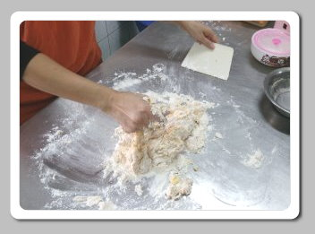
持續揉到「三光」：桌子光、麵糰光、手也光。

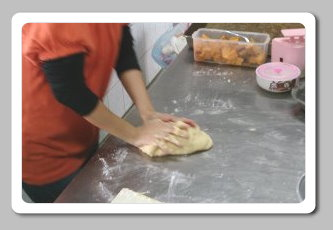
步驟四：放入發酵箱發酵 50 分鐘。

步驟五：發酵完成後再鬆弛 10 分鐘。
接著分成四等分，每份從底部往上揉成球狀；若麵糰黏手，可以先沾一點麵粉再繼續揉。

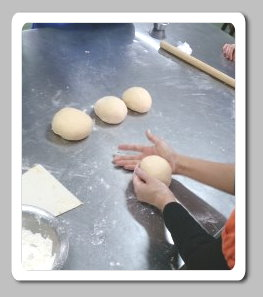
步驟六：把麵糰擀平，抹上肉醬，放入烤盤，撒上地瓜丁。
送進烤箱烤 15 分鐘，調頭再烤 5 分鐘即可享用。


大功告成


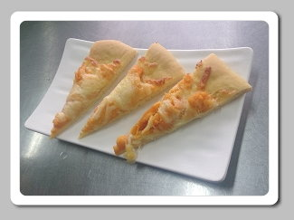
地瓜戚風蛋糕

材料準備
- 蛋黃 5 顆
- 低筋麵粉 100 g
- 糖 20 g
- 地瓜 80 g
- 牛奶 100 cc
- 油 20 g
- 玉米粉 30 g
- 蛋白 6 顆
- 萊姆酒 1/2 t
先把所有材料準備好

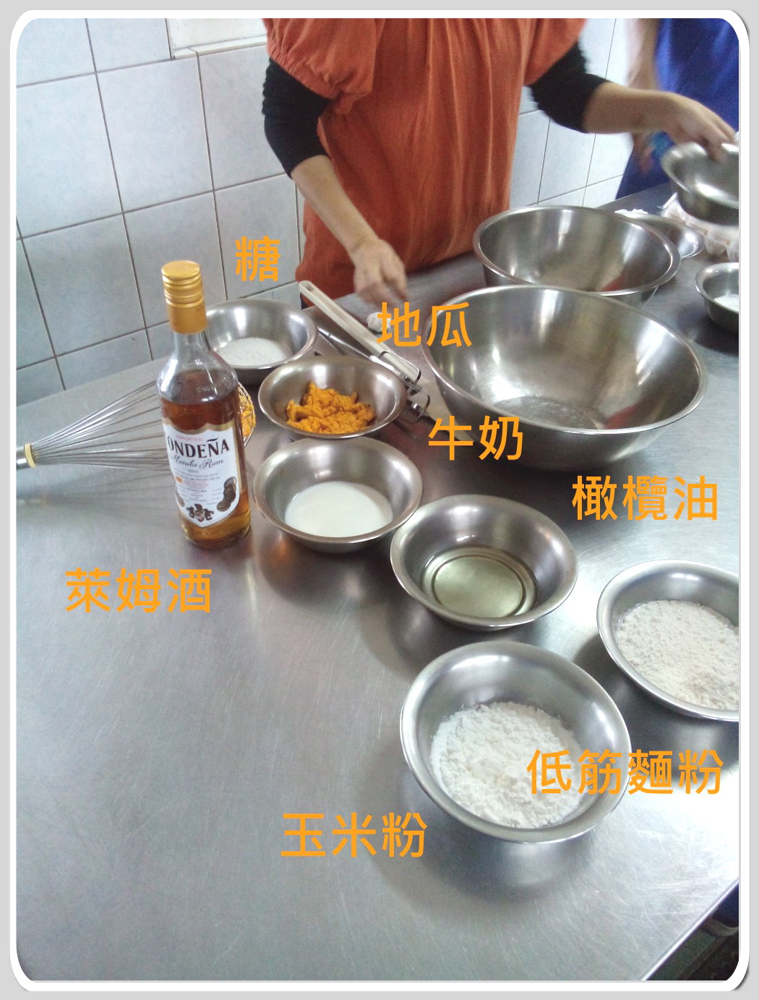
步驟一：把蛋黃與蛋白分開，先把蛋黃攪拌均勻。

步驟二：依序加入糖、地瓜、牛奶、橄欖油，攪拌均勻。

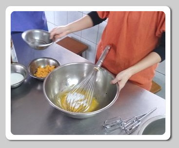


步驟三：玉米粉與低筋麵粉混合過篩後加入，攪拌均勻。

步驟四：蛋白用攪拌機打發，從頭到尾保持同一方向。

步驟五：糖分三次加入，每加一次打 30 秒。

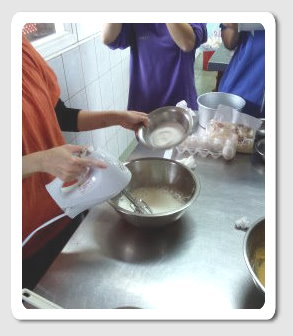
步驟六：打到蛋白霜可以站立，再多打 1 分鐘。

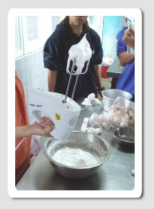
步驟七：萊姆酒加入蛋黃鍋。

步驟八：取三分之一的蛋白霜加入蛋黃鍋拌勻。

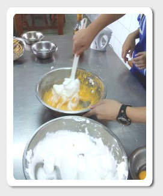
步驟九：把蛋黃鍋倒回蛋白鍋拌勻，倒入模型。

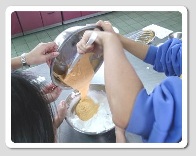
大功告成

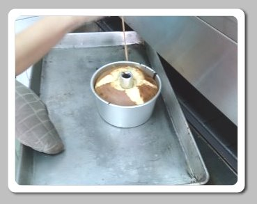
地瓜吐司

材料準備
- 麵包機
- 水 180 ml
- 鹽 3/4 小匙
- 糖 2 大匙
- 奶油 20 克
- 奶粉 1 大匙
- 高筋麵粉 250 克
- 酵母粉 1/2 小匙
步驟一：材料依序放入麵包機：水、鹽、糖、奶油、奶粉、高筋麵粉、酵母粉。

步驟二：放入蒸熟的地瓜。

步驟三：啟動麵包機，等待出爐。

大功告成

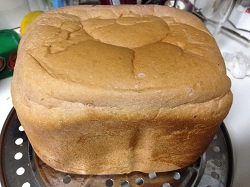
2014 年 12 月 10 日，金山高中烘焙教室
心得
一開始大家都帶著緊張的心情參加，每個人都專注在製作過程，注意每一個細節，小心翼翼，就怕哪個步驟出錯。我們做的是蜜地瓜戚風蛋糕和地瓜披薩，兩樣都充滿濃郁的地瓜香：戚風蛋糕綿綿甜甜，地瓜披薩還會牽絲，實在太美味了。沒想到地瓜的用途這麼廣，不但能做成這麼特別的料理，對身體還有益處，真是健康聖品！做完不能只顧著自己吃，更要學會與人分享，獨樂樂不如眾樂樂。這次料理 DIY 不只學到新料理，也學會了分享，一舉兩得。地瓜對金山的影響深遠，不但拓展了金山的經濟，也打響了金山地瓜的知名度。

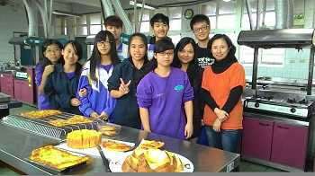